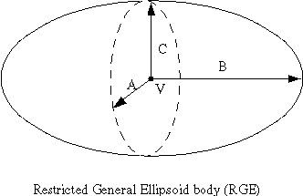
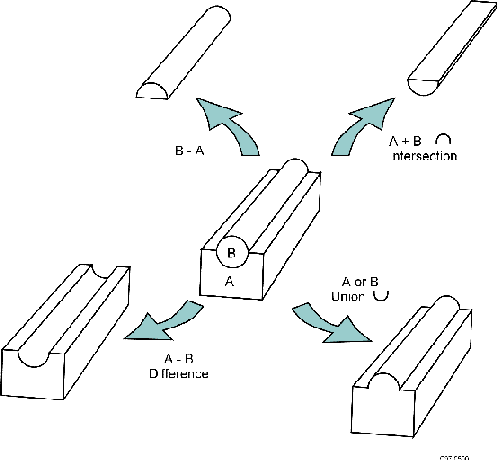

SERA:
Simulation Environment for Radiotherapy
Applications
User's Manual
Version 1C0

SERA:
Simulation Environment for Radiotherapy
Applications
User's Manual
Version 1C0

B.2. Body Input Specifications
In general, a point is specified as a triplet of values (x,y,z) defining the point in space. A vector is defined by specifying its x, y, and z components. All angles are given in degrees, and coordinates and other dimensions in space are given in centimeters.
The general format for defining a CG body is:
DIR N data for body
where DIR is the body specification type in (2x,a5) format, N is a body number in (i5) format, and the data for the body are given in (6e10.3) format. Note that when more than six entries are needed for a body, the remaining entries are entered on additional lines, with (10x,6e10.3) format. The entries for each body are described in the order in which they must be entered on the CG body specifications.
B.2.1. Rectangular Parallelepiped (RPP)

Specify the minimum and maximum values of the x, y, and z coordinates which bound the parallelepiped, i.e., xmin, xmax, ymin, ymax, zmin,zmax.

Specify the vertex V at one of the corners
by its (x,y,z) coordinates. Specify a set of three mutually perpendicular
vectors (a1, a2, and
a3), representing the height, width, and length of the
box, respectively.

Specify the point V at the center of the sphere, and the scalar R denoting the radius.
B.2.4. Right Circular Cylinder (RCC)

Specify the point V at the center of one base, a height vector H, and a scalar R denoting the radius.
B.2.5. Right Elliptical Cylinder (REC)

Specify the point V at the center of the base ellipse, a height vector H, and two vectors R1 and R2 in the plane of the base, defining the major and minor axes.
B.2.6. Truncated Right Angle Cone (TRC)

Specify a point V at the center of the lower base, the height vector H, and two scalars R1 and R2 denoting the radii of the lower and upper bases.

Specify two points V1 and V2 denoting the coordinates of the foci, and the scalar L denoting the length of the major axis.
B.2.8. Right Angle Wedge (WED)

Specify the vertex V at one of the corners, and a set of three mutually perpendicular vectors ai, with the vectors a1 and a2 describing the two legs of the right triangle of the wedge.
B.2.9. Arbitrary Polyhedron of 4, 5, or 6 sides (ARB)

Assign an index (1-8 for a six-sided ARB) to each vertex. For each vertex, give the x, y, and z coordinates. Each of the faces is then described by a four-digit number giving the indices of the four vertex points in that face. For each face, these indices must be entered consistently in either clockwise or counterclockwise order.
An example of the ARB body, in this case, describing a simple unit cube, looks as follows:
ARB 1
0.0 0.0
0.0 1.0
0.0 0.0
1.0 1.0
0.0 0.0
1.0 0.0
0.0 0.0
1.0 1.0
0.0 1.0
1.0 1.0
1.0 0.0
1.0 1.0
1234 1584 1562
5678 2673 4873
B.2.10. Right Vertical Wedge (RVW)

Specify the vertex V at the lower plane of the wedge. Specify a scalar defining the width of the side joining the vertex and the right-angled corner (a2). Specify theta, the angle subtended by the wedge at the vertex. Specify phi, the angle between the x-axis and the wedge face opposite the right-angled corner, and Hz, the scalar height of the wedge. This body could also be obtained with the WED body, but the RVW is easier to specify and has been found to give fewer round-off problems.
B.2.11. Restricted General Ellipsoid (RGE)

Specify the half-lengths of the three major elliptical axes A, B,
and C, and the center point V. This will generate a general ellipsoid
(not an ellipsoid of revolution, as for the ELL body) with axes parallel
to the three coordinate axes, centered at V. The elliptical axes
A, B, and C are parallel to the x-, y-, and z-axis, respectively.
This body is particularly useful for modelling the so-called Snyder phantom,
which is commonly used for beam measurements.
B.3. Combinatorial Geometry Descriptions
The basic technique for the description of the geometry consists of defining the location and shape of the various regions in terms of the intersections and unions of the geometric bodies. A special operator notation involving the symbols +, -, and OR is used to describe the intersections and unions. These symbols are used by the program to construct information relating material descriptions to the body definitions. If a body appears in a region description with a + operator, it means that the region being described is wholly contained in the body. If a body appears in a region description with a - operator, it means that the region being described is wholly outside the body. If the body appears with an OR operator, it means that the region being described includes all points in the body- union list. OR may be considered as a union operator. In some instances, a region may be described in terms of zones lumped together by a union of these zones. When OR operators are used there are always two or more of them, and they refer to all body numbers following them, either + or -, that is, all body numbers between ORs or until the end of the region input for that region are intersected together before ORs are performed. Figure 1 visually demonstrates the results of the Boolean operators.

Figure 1. Results of Boolean operations in CG geometry.
![[Picture]](SeraMC/ex1.gif)
![[Picture]](SeraMC/ex2.gif)
Figure 3. Geometry for Example 2.
These regions can be described by the two RPP's, bodies 1 and 3, and the RCC, body 2. The region description would be:
![[Picture]](SeraMC/ex3.gif)
A = +1 -2 -3
B = +2 -3
C = +2 +3
D = +3 -2
E = OR +2OR +3
![[Picture]](SeraMC/ex4.gif)
Region A - all points interior to the circumscribed parallelepiped and exterior to the cylinder and sphere. Note that region A includes all of the space contained inside the box except that portion inside the cylinder
![[Picture]](SeraMC/ex5.gif)
Region A - all points interior to the parallelepiped but exterior to the cylinder.
B.5. Format of Combinatorial
Geometry File
The format of the CG file is given below. Basically, it consists
of a title record, several records defining the bodies, and several more
records defining the Boolean operations to describe physical regions.
Record Format Description of entries1 (20x,10a6) Title record - enter any descriptive information desired in columns 21-80.
2 (2x,a3,i5,6e10.3, Body type directive (three characters), body number, data for particular
body type specified.
(10x,6e10.3))3 (2x,a3) Enter END in columns 3-5 to denote end of body descriptions.
4 (2x,a3,i5,9(a2,i5)) Region name (three characters), region number, and the Boolean directives
to describe the region in terms of the bodies defined above. Body numbers
from other files with geometry information, i.e., source file, may also be
used in these operations.5 (2x,a3) Enter END in columns 3-5 to denote the end of the CG file.